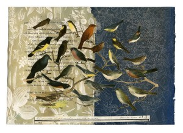
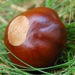

Eye of the Buck
As I walk to and from the Washington and Lee campus, I pass under a large buckeye or horse chestnut tree in front of the Robert E. Lee Episcopal Church, and because my office used to face that building and tree, I’ve had the pleasure of watching it bud, flower, leaf out, gleam with autumn and on occasion, harbor birds — crows, sparrows, songbirds and, one year, a small hawk’s nest and vigilant red-tail. I’ve also been acutely aware for years that fall is the season in which the buckeyes drop, often breaking open on the walkway below.
{kind=link}
Never one to waste a local resource, I’ve occasionally brought buckeyes (Aesculus, or edibile acorn to the Greeks) to a writing class and given one to each student to describe. Few students are acquainted with them and many know of “buckeyes” only that they’re ornaments on Ohio State football helmets and furnish the nickname for people from that state. Most are, however, quick to perceive that the contrast between the outer, rough and spiny husk and the smooth, chocolate-colored seed (which is not technically a nut) offers an inviting place to begin.
This year, I’ve found a different classroom use for these natural keepsakes, which are considered lucky by some and whose husks remind me of armadillos and whose internal seed does resemble the eye of a buck deer (and probably a doe, as well). The student interns here at Shenandoah perform a variety of functions. We have blogmeisters, contest managers, a copyediting czar, a Facebook ringmaster and a Poem of the Week editor, but from the starting gun everyone pitches in to read and comment on the fiction submitted to Shenandoah (whether through the mail or through our Submittable link here). To sharpen our wits for this task and to develop a ruthless triage protocol (Flannery O’Connor said she would stop reading a piece as soon as she realized she could do so “without a sense of loss”), we spend substantial class time discussing what qualities we expect or want from a short story, why people read short stories, why they write them. And I’m always looking for metaphors to keep the discussion lively.
{kind=link}
It might be easy to imagine that potential contributors would love to see transcripts of those conversations, because writers and interviewers are forever asking editors, “What are you looking for?” Unfortunately, the dialogue is messy, as full of contradictions, variations, enigmas and reboots as anyone’s creative process would be. We talk about gripping beginnings, resonant endings, coherence, surprise, wit, economy, suspense, precision, ingenuity, energy, immediacy, visceral imagery, consequence and character, character, character. Our conclusions are tentative and intricate and leave us focused but a little addled. Saving us from complete bewilderment are examples from our own pages and from the submission pile, but it’s a conversation never concluded but continued in the text boxes or sticky notes where we record our opinions before passing a story on to the next reader. Many of the stories we consider do not lead us to a consensus, but the vote tallies are seldom close, and when they are, I simply make the decision. I suppose you could say that the buckeye stops here.
So what of that buckeye as metaphor? One way I’m starting to look at stories involves the contrast between the weathered, spiky armor of the capsule and the smoother, shinier, more touch-friendly core with its whitish hilum where the seed was attached to the capsule. I find myself wanting stories which in some way possess a discernible roughness, which may be due to gritty realism or archaic language, unlikable protagonists, challenging structure, or unfamiliar settings, but I also want the stories to display a more polished and less difficult aspect. Maybe it’s a strong dose of compassion, a lyrical melody, an elegance of phrasing or completely enchanting set of questions and revelations. This may be the moment when I can only say that the story conveys a mystery that does not come down to whodunit? but is a creek that begins high in the ridges of the idiosyncratic story but flows into that larger river of the numinous which is our common passageway through the dark, and I do still believe that, while the best stories both delight and enlighten, there’s a darkness about them, as well.
I hope readers of the fiction in this issue will feel their dual nature– the something rough and likely to find traction with the actual world about us, the other thing elegant and mysterious beyond the realism and the practical. As usual, we invite comments on what we publish and have built in fields for your words.RTS
{kind=link}
{kind=link}
Pingback: 100 Essential Sites for Voracious Readers – Masters in English